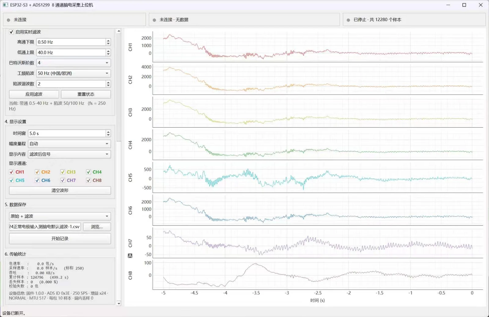

Python 桌面上位机
BLE 连接、八通道显示、数字滤波与 CSV 数据记录。
界面预览

软件功能
eeg_host.py 使用 PyQt6 与 pyqtgraph 构建桌面界面，使用 bleak 访问 BLE 设备。源码包括真实设备模式和无需硬件的模拟模式。
- 设备扫描、连接与断开；读取固件状态。
- 8 通道实时曲线、显示开关、时间窗与幅度量程调整。
- 采样率、增益、输入模式、SRB1、BIAS 和导联脱落配置。
- 高通/低通或带通滤波，50 / 60 Hz 陷波及谐波配置。
- 按原始、滤波或两者保存 CSV；显示包速率、样本率、丢失样本和校验失败计数。
源码说明面向 Windows / macOS / Linux。具体系统、蓝牙适配器和依赖组合仍须按交付环境验证，不能仅凭跨平台框架推断所有设备兼容。
安装与启动
python -m venv .venv
# Windows PowerShell：直接使用环境内的解释器
.venv\Scripts\python.exe -m pip install PyQt6 pyqtgraph numpy scipy bleak
.venv\Scripts\python.exe eeg_host.py --demo
# 连接真实板卡
.venv\Scripts\python.exe eeg_host.pymacOS / Linux 使用 .venv/bin/python 执行相同命令。macOS 上需允许运行 Python 的应用访问蓝牙；其设备地址可能显示系统分配的 UUID，而非 MAC 地址。
原始文件未固定依赖版本。首次完成安装与测试后，建议保存环境版本清单，以便复现。
日常使用顺序
- 先扫描并连接目标设备，读取状态。
- 停止记录时设置采样率、增益和输入模式，确认设备已响应。
- 启动采集，按需要调整显示通道、时间窗和幅度。
- 检查传输统计，再选择 CSV 路径与保存模式开始记录。
- 结束时先停止记录与采集，再断开连接。
界面采样率下拉框包含 250、500、1000、2000、4000 SPS；协议解析器也认识 8000 和 16000 SPS 编码。高采样率的连续传输能力需在实际链路上验证。
滤波与原始数据
滤波在电脑端运行，采用 SciPy 的 Butterworth 二阶节表示及有状态 sosfilt 逐块处理；陷波使用 iirnotch。因此是实时因果滤波，会有相位与起始过渡影响，不等同于离线零相位滤波。
- 高通、低通和陷波设置应结合实际采样率，不能把软件滤波带宽写成整板模拟带宽。
- 超过奈奎斯特频率约束的陷波谐波不会加入滤波器。
- 比较数据时统一采样率、增益、滤波设置和记录时长。
- 建议保留原始通道，便于离线重新处理和定位输入干扰。
CSV 文件格式
文件以 UTF-8 写入，开头为 # 注释元数据，再写入列名和数据。通道数值单位为 µV。
| 列名 | 含义 |
|---|---|
| time_s | 主机 Unix 时间轴，单位秒；以开始记录时的主机时间加样本序号偏移计算，不是从零开始的相对秒数 |
| sample_index | 设备样本序号；用于检查缺口和采集重启 |
| raw_ch1 … raw_ch8 | 未经上位机数字滤波、已换算为 µV 的数据 |
| filt_ch1 … filt_ch8 | 经过上位机数字滤波的 µV 数据；按保存模式出现 |
CSV 中的 raw 不是 ADS1299 原始整数码，而是已经换算的微伏数值。丢样表现为样本序号或时间缺口，记录器不会自动补出真实缺失样本。
# columns_unit: microvolt (uV)
time_s,sample_index,raw_ch1,...,raw_ch8,filt_ch1,...,filt_ch8读取 CSV 时先跳过 # 注释行。time_s 由主机 time.time() 锚定，再按样本序号推进；它不是设备硬件时间戳，也不表示采样时刻已经与外部时钟同步。采集中重新配置会使设备样本序号重置，因此应结束当前记录并开启新文件，避免把多个采集段误认为连续数据。
二次开发入口
| 代码模块 | 职责 |
|---|---|
| parse_packet() / crc8() | 帧解析、校验、24 位补码和单位换算 |
| BleTransport | bleak 扫描、通知订阅与命令发送 |
| DemoTransport | 模拟数据与模拟状态 |
| FilterBank | 滤波配置和逐块状态 |
| Recorder | 独立线程写入 CSV |
| RingBuffer / 主窗口 | 滚动显示缓冲与界面交互 |
本页资料依据
- 8通道BCI/程序/上位机程序/Python/eeg_host.py
- 8通道BCI/程序/嵌入式程序/ESP32S3_ADS1299_EEG.ino